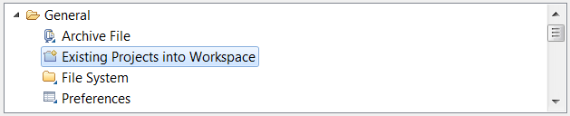

Requirements
-
Eclipse 3.4 or above
Download Eclipse IDE for Java EE developers.
-
Adobe Flash Builder 4
Download a trial version or buy Flash Builder 4 (choose the Plug-In bundle).
Install GraniteDS Tools
-
GraniteDS Eclipse Builder (Gas3)
Copy
<JBOSS_HOME>/graniteds/tools/org.granite.builder.***.jarto your<ECLIPSE_HOME>/pluginsdirectory.Restart Eclipse.
If you right-click on a Java project in the package explorer view, you now see a
 entry in the drop-down menu.
entry in the drop-down menu.
Import Sample Applications
-
Importing from Eclipse
Right-click in your package explorer view, select "Import...", then "General" - "Existing Projects into Workspace".

Click on the "Next" button and select the "Select archive file" radio button, browse to the
<JBOSS_HOME>/graniteds/samples/sample-projects.zipfile and select the sample projects you want to import.
Click on the "Finish" button. The selected sample projects should now be visible in your Eclipse workspace.
Redeploy Applications
-
Configuring deployment
Edit the
build.propertiesfile in the root directory of the project. Change thejboss.homeproperty value so it points to your GraniteDS Community Platform installation directory (ie:JBOSS_HOME). -
Redeploying with the Ant build file
Once you have modified a sample application, you may redeploy it by simply right-clicking on the
build.xmlfile and selecting "Run As" - "Ant Build".You may now refresh your browser tab in order to see your modification.